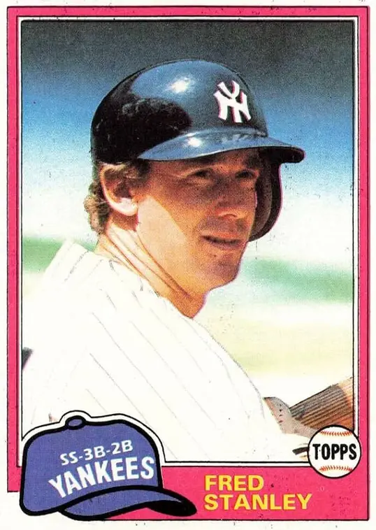

Fred Stanley "Chicken"
Career Highlights & Facts
(Facts are AI-generated and may require verification)
- Served as a reliable utility infielder known for defensive versatility.
- Contributed to multiple championship-caliber rosters during a long tenure in a major metropolitan market.
- Earned the nickname 'Chicken' due to a distinct physical mannerism while at the plate.
Would you like to find out more about Fred Stanley?
This bio is not assigned. Want to write a SABR bio? Contact
bioproject@sabr.org
.
Full Name
Frederick Blair Stanley
Born
August 13, 1947 at Farnhamville, IA (USA)
Stats
Baseball Reference
Retrosheet
Fred or Frederick Stanley may refer to:Fred Stanley (politician) (1888–1957), Australian politician in the New South Wales Legislative Assembly
Fred Stanley (baseball), Major League Baseball infielder and executive
Frederick Stanley, 16th Earl of Derby (1841–1908), British politician and Governor General of Canada
Frederick Trent Stanley (1802–1883), American industrialist
Frederick Stanley (cricketer) (1923–1993), New Zealand cricketer
Career Totals
| WAR | AB | H | HR | BA | R | RBI | SB | OBP | SLG | OPS | OPS+ |
|---|---|---|---|---|---|---|---|---|---|---|---|
| 1.7 | 1650 | 356 | 10 | .216 | 197 | 120 | 11 | .301 | .263 | .564 | 62 |
Statistics via Baseball-Reference.com
The Original Clue